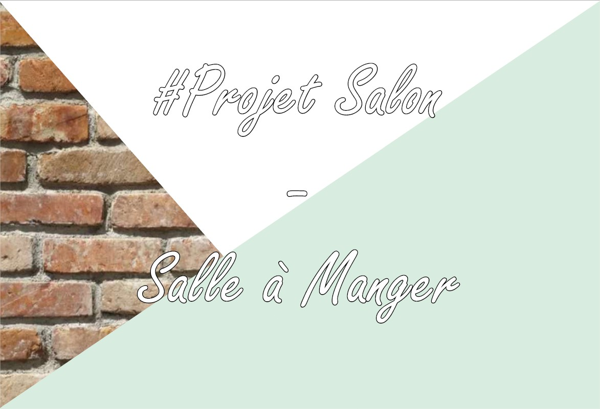
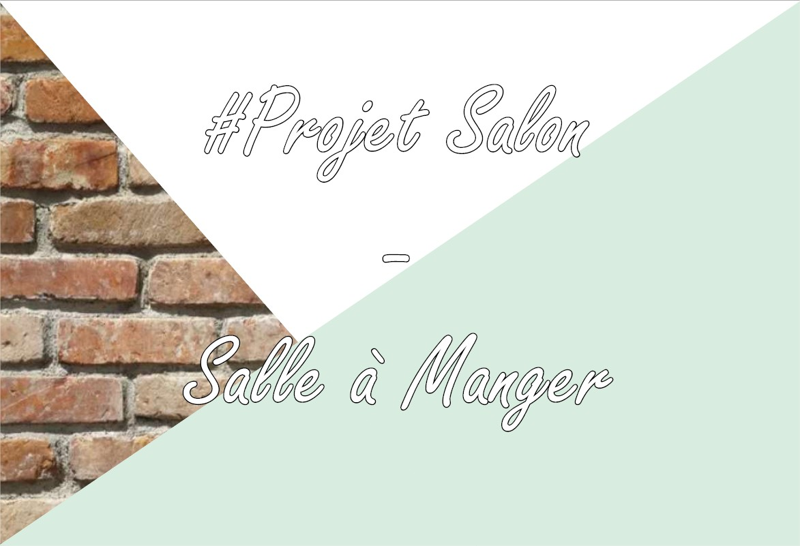

Mon travail
Grâce à l'Institut de Design d'Intérieur, j'ai pu m'épanouir dans des conceptions de projets d'aménagement et réapprendre à dessiner. La mise en application de différentes techniques de présentations, pour mes projets, mon permis de mettre en avant mes rendus visuels.